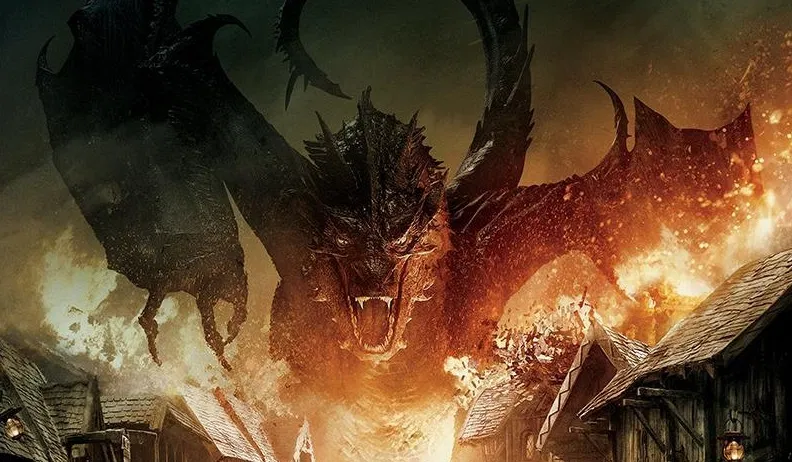

The Legendary City Called Bree
Of course not the one mentioned in Lord Of The Rings.
Some might even be jealous of the name of this birthplace.
Or so I have been told.
Even though looks can be deceiving, Fem is officially not a Hobbit.
But beware, the world is filled with creatures whose pesonality are as ugly as an Orc
or as treacherous as the Creature named "Gollem".
For now this tale is done, do pay the dragon a visit.
